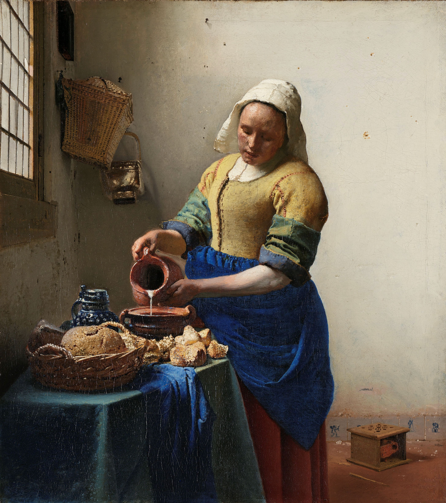
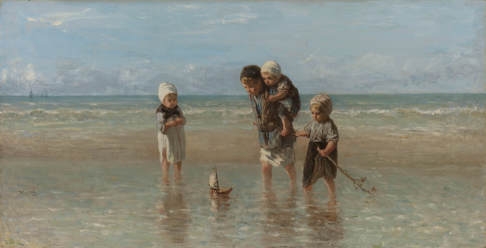
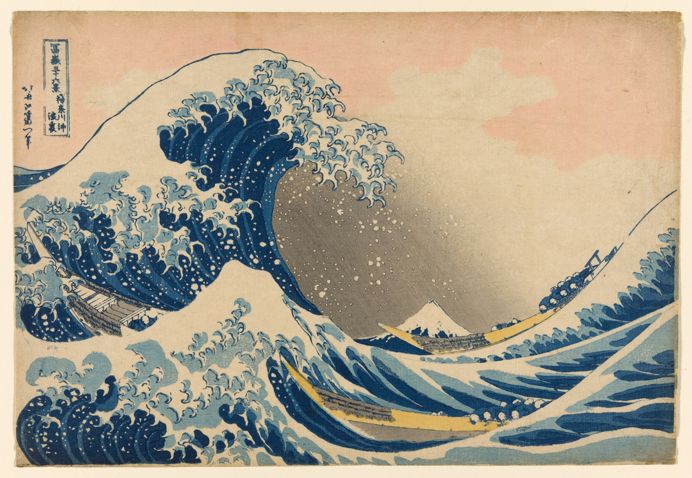
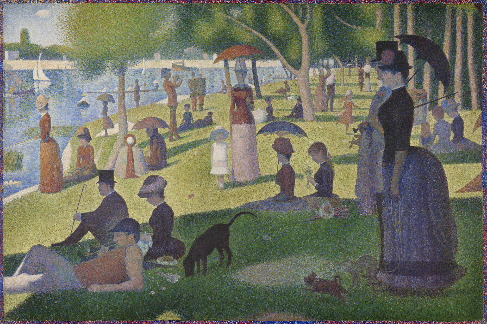
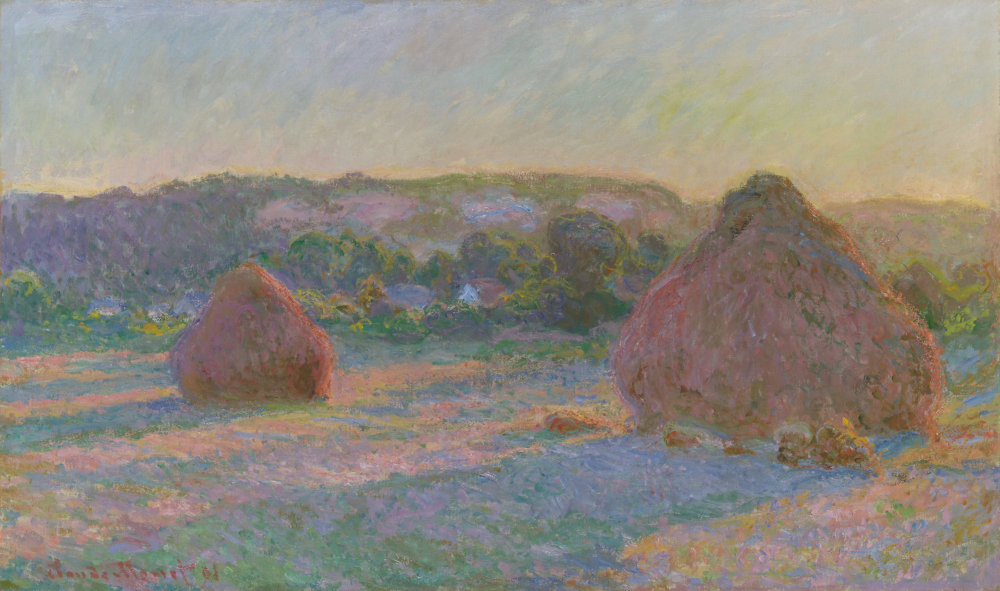
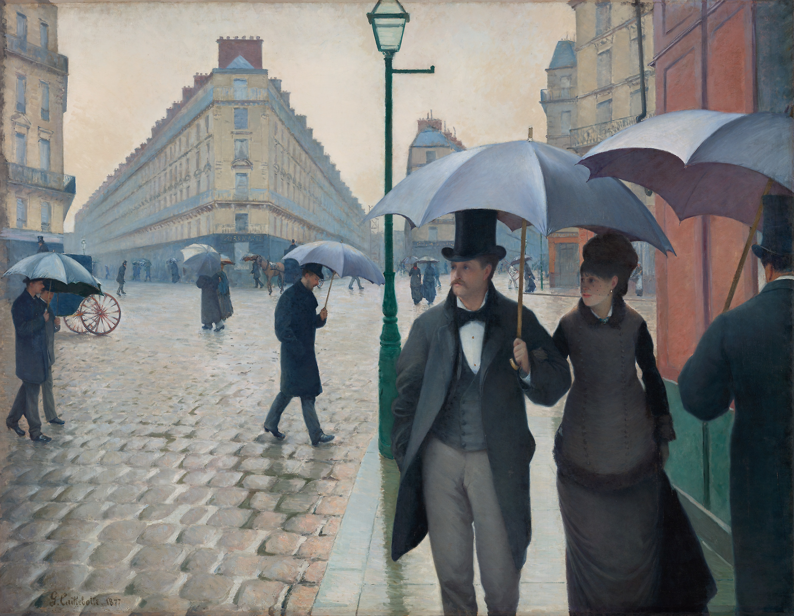
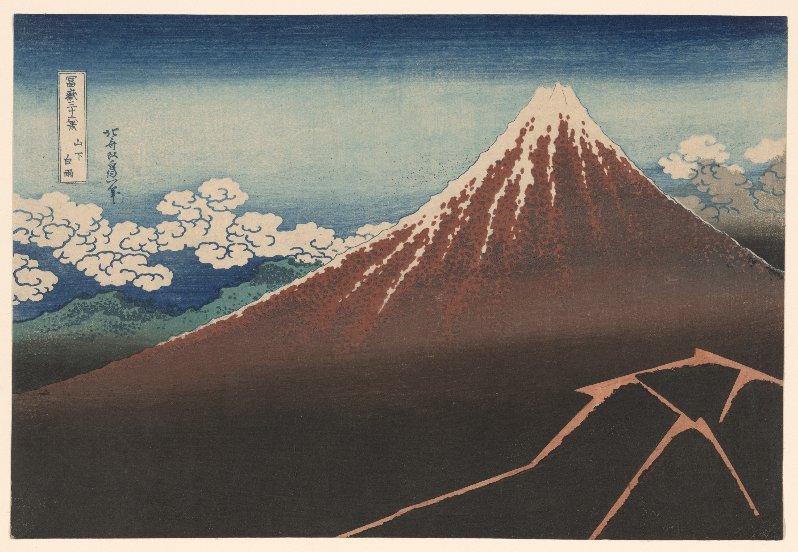

Q.1
あなたにおすすめの美術館
アムステルダム国立美術館 -Rijksmuseum Amsterdam-
-

The Milkmaid/Johannes Vermeer
-

The Night Watch/Rembrandt van Rijn
-

Figures in a Courtyard behind a House/Pieter de Hooch
-

The Merry Family/Jan Havicksz.Steen
-

Still Life with Flowers and a Watch/Abraham Mignon
-

Children of the Sea/Jozef Israëls
あなたにおすすめの美術館
シカゴ美術館 -The Art Institute of Chicago-
-

The Bedroom/Vincent van Gogh
-

Under the Wave off Kanagawa/Katsushika Hokusai
-

A Sunday on La Grande Jatte/Georges Seurat
-

Stacks of Wheat/Claude Monet
-

Paris Street; Rainy Day/Gustave Caillebotte
-

Shower Below the Summit/Katsushika Hokusai
あなたにおすすめの美術館
ナショナル・ギャラリー・オブ・アート -National Gallery of Art-
-

Woman with a Parasol/Claude Monet
-

The Railway/Edouard Manet
-

Ginevra de' Benci/Leonardo da Vinci
-

Still Life of Oranges and Lemons with Blue Gloves/Vincent van Gogh
-

The Japanese Footbridge/Claude Monet
-

Pont Neuf, Paris/Auguste Renoir